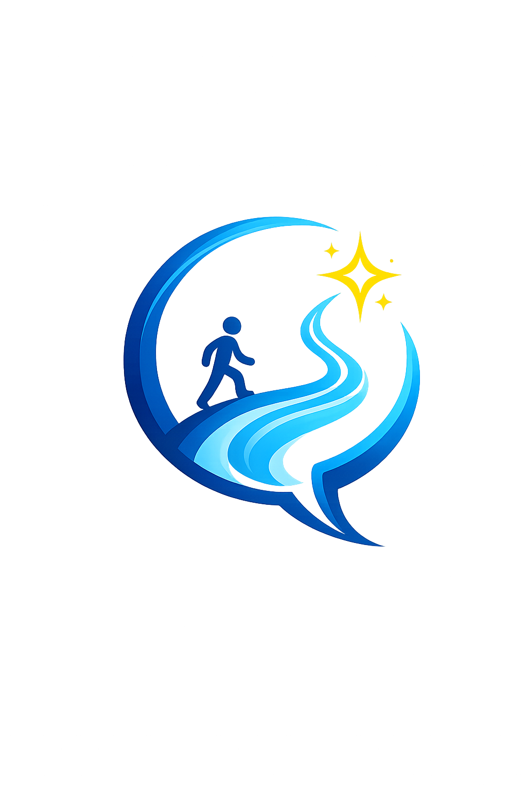

You don’t stay in your orbit.
You break it.
Aura × Orion = a mindset, not a name.
AURION comes from two powerful ideas: Aura and Orion.
Think of it like this: you already carry the energy (Aura), and you already have a direction to aim for (Orion). AURION is the moment you decide to move forward instead of staying still 🚀✨
◯ Circle: Comfort zone
➚ Path: Growth journey
🚶 Figure: Taking the first step
✦ Star: New opportunities
This part is not just a story — it’s the experience that shaped the idea behind AURION.
Through my experience with AIESEC, I was exposed to new environments and situations that pushed me to grow.
I met people 👥 who showed me what real leadership looks like through their confidence, discipline, and mindset.
From them, I started to understand the importance of stepping out of my comfort zone and growing through challenges.
This experience became the inspiration behind creating this logo and concept.
They were my guiding stars ⭐ who inspired me to grow
And because of that, I decided to try new things instead of staying in my comfort zone.